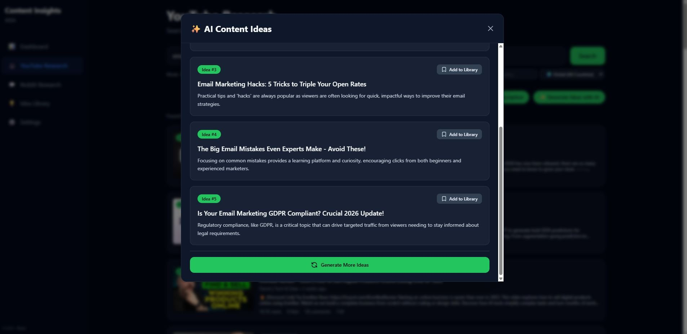
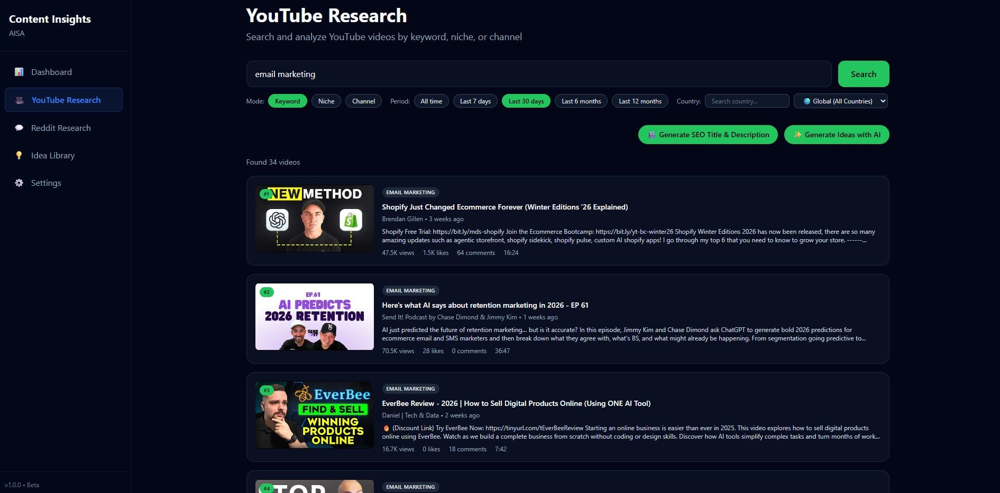
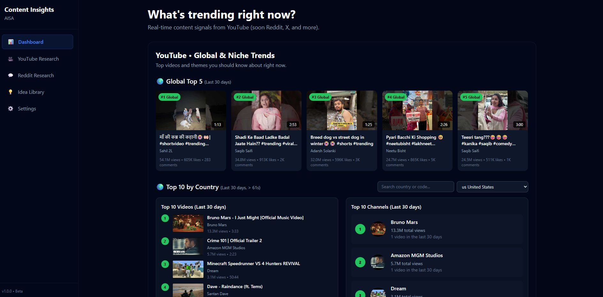

Revenue Operations · Revenue Systems · CRM Automation
Helping growing companies build scalable CRM systems, automation, and operational processes.
I help companies streamline customer-facing operations by improving CRM architecture, workflow automation, reporting, and cross-functional processes — so Marketing, Sales, and Customer Success teams can operate from a reliable source of truth.
About me
Florianópolis, Brasil · Remote
Disconnected CRM data, manual processes, inconsistent reporting, and teams working from different sources of truth create friction across Marketing, Sales, and Customer Success. I help companies build and optimize the operational systems that remove that friction and support revenue growth.
My background combines Customer Success, Revenue Operations, CRM administration, retention, workflow automation, and business process design — giving me a practical understanding of how customer data needs to flow across the entire customer lifecycle, not just inside one system or one team.
What I do
Four areas of work — each focused on business outcomes, not tool lists.
01 / CRM ARCHITECTURE & ADMINISTRATION
I design, implement, and maintain CRM systems that work the way your business actually operates. Whether starting from scratch or cleaning up an existing setup — the result is a structured, trustworthy system your team will actually use.
02 / WORKFLOW AUTOMATION & INTEGRATIONS
I automate repetitive processes and connect the tools your teams depend on — through no-code platforms, custom API integrations, and code when needed. The goal is always the same: fewer manual steps, fewer errors, and better handoffs between teams.
03 / REPORTING & OPERATIONAL ANALYTICS
I build dashboards and reporting processes that surface what actually matters — without requiring manual effort to keep them updated. Sales performance, customer health, revenue trends — available when you need them, accurate enough to act on.
04 / REVENUE SYSTEMS & PROCESS DESIGN
I map, design, and document the processes that connect Marketing, Sales, and Customer Success — so the business can scale without the operational chaos that usually comes with it. Clear ownership, clean handoffs, and systems built to last.
Selected Projects
Real projects where CRM systems, automation, and operational intelligence drove measurable business outcomes.
CRM Architecture · Revenue Operations
Designed a scalable automation architecture to maintain data integrity between Sales and Customer Success. Conditional branching, multi-stage workflows, lifecycle automation, webhooks, and custom field mapping across the GTM stack — with validation guardrails to keep reporting clean and audit-ready.
Automation · Reporting · CS Operations
Built an end-to-end automated reporting system connecting Freshdesk → Google Apps Script → Looker Studio, eliminating 70% of manual reporting work. Delivered real-time KPI dashboards to CS, Sales, and Finance leadership at Asksuite, with AI-powered workflow automation layered on top.



AI Automation · API Integration · Personal Project
A personal project built to explore AI-powered automation at scale. Pulls content from YouTube and Reddit via API, runs it through an OpenAI enrichment layer to categorize and summarize, and delivers structured outputs to a real-time dashboard — demonstrating the same automation and integration principles applied in operational work.
Track Record
A track record of building CRM systems, automations, and operational processes that drive real business impact.
APR 2024 – PRESENT
Doratech
Independent Revenue Operations consulting for B2B SaaS clients. HubSpot CRM architecture and administration, API integrations, workflow automation, data governance, and operational reporting — working directly with founders and operations teams.
JUL 2025 – MAR 2026
Asksuite
Built automated data pipeline Freshdesk API → Google Apps Script → Looker Studio, reducing manual reporting by 70%. Implemented AI-powered workflows using Claude and ChatGPT. Built KPI frameworks for CS, Sales, and Finance leadership.
AUG 2022 – NOV 2023
Pietà.tech
Architected full CRM and analytics infrastructure from scratch. Built REST API integrations connecting ActiveCampaign, Intercom, and Jira via JavaScript. Owned the full customer lifecycle end-to-end.
NOV 2021 – MAY 2022
Warren Brasil
HubSpot CRM administration in a regulated fintech environment. Structured reporting and pipeline management.
APR 2019 – OCT 2021
Gerdau
Power BI dashboards integrated with SAP and SQL for the Tax department. First foundation in data, process, and systems.
Toolset
The tools and capabilities I bring to operational problems — in order of how often they matter.
CRM Architecture
Automation & Integrations
Reporting & Analytics
Revenue Operations
AI & Productivity
Data & Development
Credentials
Google Data Analytics Professional Certificate
Google / Coursera
Completed · May 2026
IBM Data Engineering Professional Certificate
IBM / Coursera
In progress · Supporting technical depth
Get in touch
If you're building or scaling a B2B company and need someone to get your CRM, automation, and operational processes working properly — I'd love to hear about it.